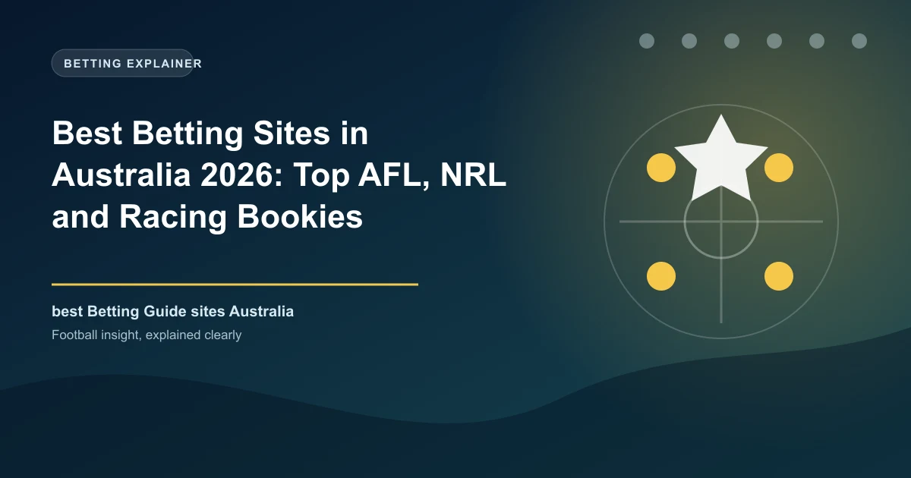

Best Betting Sites in Australia 2026: Top AFL, NRL and Racing Bookies

Australia's licensed bookmakers are among the best-run in the world, but the law bans sign-up inducements — so you choose them on odds, markets and apps instead of bonuses. Here are the ten we rate highest for 2026.

Australia is one of the planet's biggest betting markets per head of population, built on AFL, NRL, cricket and one of the richest horse-racing cultures anywhere. It also has some of the strictest advertising and inducement rules in the world: under the National Consumer Protection Framework, bookmakers cannot offer sign-up bonuses, free bets or any bonus that encourages new account registration. Promotions are only visible after you log in as a customer.
That is actually excellent news for punters. Because no one can win your business with a marketing bonus, operators compete on the things that actually make you money — odds, market depth, app quality, payout speed and better responsible-gambling tools. This guide ranks the ten best licensed Australian bookmakers for 2026 based on real punter experience across those factors.
Australia Betting at a Glance
| Factor | Detail |
|---|---|
| Currency | Australian Dollar (AUD / $) |
| Federal law | Interactive Gambling Act 2001 (enforced by ACMA) |
| Licences | State/territory regulators; most corporate books hold NT licences (NTRWC) |
| Sign-up bonuses | Banned under the National Consumer Protection Framework |
| Tax for punters | None — winnings are tax-free for recreational bettors |
| Online casino | Prohibited for Australian residents |
| Payments | PayID, debit cards, bank transfer; credit cards banned |
| Key sports | AFL, NRL, cricket, horse racing, tennis, A-League |
Licensing and the Law
Online sports and racing betting is fully legal in Australia for licensed operators. The federal Interactive Gambling Act 2001 sets the rules and the ACMA maintains the official register of licensed interactive providers — if a site is not on that register, it is not licensed to take Australian bets. Most of the big corporate bookmakers hold Northern Territory licences granted by the NT Racing and Wagering Commission, which has become the de facto national regulator for online bookmaking; state TABs and a few boutique operators hold licences elsewhere (unlike online casino, which is prohibited entirely for Australian residents).
Why Australian Bookmakers Offer No Bonuses
Since 2018, the National Consumer Protection Framework has banned sign-up inducements — deposit matches, free bets, bonus credits and similar offers aimed at attracting new customers. This is why Australian bookies advertise 'odds boosts' and daily promotions to existing customers instead. The practical effect for you: comparison is about sustained odds quality and features, not the size of a welcome banner, and any site that tries to lure you with a sign-up free bet is operating outside Australian rules.
How We Ranked the Sites
Ranking is based on long-run odds and margins, market depth on AFL, NRL and racing, app stability and in-play product, payout speed (PayID and EFT), and the strength of each operator's responsible-gambling controls.
The Top 10 Betting Sites in Australia, Ranked
1. bet365 — Best Overall Depth
bet365.is the world's largest bookmaker and product showcase in Australia. No other operator matches its market depth, in-play speed or live-streaming catalogue across AFL, NRL, cricket and global football, and its odds are consistently sharp thanks to NT licensing that permits genuinely competitive pricing. Funding works via PayID, debit card and bank transfer, with fast PayID payouts.
- Best for: market depth, live streaming, in-play
- Licence: NT (Hillside)
- Payments: PayID, debit card, bank transfer
2. Sportsbet — Market Share Leader
Sportsbet (Flutter) is Australia's largest bookmaker and the benchmark for AFL and NRL markets, with the deepest event menus and strong same-game multi (SGM) builders. Owned and operated locally for two decades, it sets the pace on price for the big codes, and its app leads on feature releases.
- Best for: AFL/NRL depth, SGMs, market share leader
- Licence: NT
3. Neds — Best Racing Product
Neds, part of the Entain group, is the pick for serious racing punters, offering one of the best form displays in Australia alongside AFL and NRL coverage. The app is modern and stable, odds are drawn from the same engine as Ladbrokes, and payouts via PayID are fast.
- Best for: racing form, modern app
- Licence: NT (Entain)
4. Ladbrokes — Entain Twin
Ladbrokes shares Entain's pricing engine with Neds, so prices and limits are usually near-identical; choose between the two on interface taste. Ladbrokes leans slightly more traditional, and its form tool and early odds on UK racing are class-leading for the international racer.
- Best for: international racing, class-leading form
- Licence: NT (Entain)
5. TAB — Tote and Fixed Side By Side
Australia's real TAB (Tabcorp) remains the only place you can see tote and fixed odds on the same race side by side, and its retail presence underpins a dependable pool product. Online, TABtouch and the Tabcorp app are smooth, and the tote is invaluable for exotic racing bets where pool odds genuinely matter.
- Best for: tote betting, exotic racing, pools
- Licence: state TABs
6. Dabble — Social Betting
Dabble is the breakout Australian app of the last few years, built around a social feed — you can copy other punters' bets, share tips in-app and react to results in real time. Backed by an NT licence (NTRWC), it offers fast withdrawals, real cash and a betting experience closer to a social network than a bookmaker.
- Best for: social betting, copy bets, banter
- Licence: NT
7. Picklebet — Sports and Esports
Picklebet built its brand on esports and has quietly become one of Australia's most modern sportsbooks, with a slick app and competitive pricing on AFL, NRL, tennis and esports. It is a frequent top-five name in independent rankings and offers one of the best overall mobile experiences.
- Best for: esports, modern app, all-round value
- Licence: NT
8. PointsBet — Product Innovation
PointsBet remains a genuine innovator, known for its PointsBetting products on AFL and NRL alongside a full traditional book, plus same-game multis and strong live features. It is the right home for punters who enjoy alternative risk products.
- Best for: points betting, product innovation
- Licence: NT
9. Unibet — A-League Partner
Unibet is a favourite among football and A-League punters, with strong European football odds and partnerships across Australian sport. Its app is stable and its same-game multi builder is one of the cleaner ones, and blinkered early-market pricing rewards astute bettors.
- Best for: football, A-League, early prices
- Licence: NT
10. Betr — Aggressive Newcomer
Betr launched with aggressive pricing and a bold Fast Payouts promise (withdraw within around 60 seconds for verified users). While it has paid fines for compliance lapses under its NT licence, its racing and AFL prices remain competitive, and it offers a genuinely distinctive payout experience.
- Best for: fast payouts, competitive racing prices
- Licence: NT
Quick Comparison Table
| Site | Best For | Licence | Payments | Payout Speed |
|---|---|---|---|---|
| bet365 | Market depth | NT | PayID, cards, bank | Fast via PayID |
| Sportsbet | AFL/NRL depth | NT | PayID, cards, bank | Fast via PayID |
| Neds | Racing form | NT | PayID, cards, bank | Fast via PayID |
| Ladbrokes | Intl racing | NT | PayID, cards, bank | Fast via PayID |
| TAB | Tote & pools | State | PayID, cards, bank | Fast |
| Dabble | Social betting | NT | PayID, cards | Fast |
| Picklebet | Modern app | NT | PayID, cards | Fast |
| PointsBet | Points betting | NT | PayID, cards, bank | Fast |
| Unibet | Football | NT | PayID, cards | Fast |
| Betr | Rapid payouts | NT | PayID, cards | ~60 sec (verified) |
Payment Methods: PayID Dominates
PayID has become the standard funding method at Australian bookmakers, with near-instant deposits and same-day withdrawals to your linked bank account. Debit card deposits are also common. Credit cards have been banned for online wagering since 2019, and cryptocurrency is not a recognised method at licensed Aussie books — a hard compliance line that keeps the market clean. For withdrawals, PayID is the fastest and most reliable; most operators process within minutes to a few hours.
Pick Your Site by What You Bet On
| If You Want... | Top Choice | Runner-Up |
|---|---|---|
| Deepest AFL/NRL markets | Sportsbet | bet365 |
| Racing form and prices | Neds | Ladbrokes |
| Tote and exotic racing | TAB | — |
| Social / copy-betting | Dabble | Picklebet |
| Live streaming + depth | bet365 | Sportsbet |
| Fastest payouts | Betr (~60 sec) | bet365 |
| Points betting product | PointsBet | — |
Your Money, Tax-Free
Recreational punting in Australia is treated by the ATO as a hobby, so your winnings are not assessable income and no capital gains tax applies. The only exception is if you are operating gambling as a business, which courts have set an extremely high bar for (a dedicated operation, proprietary systems, staff and the like). The state taxes the bookmaker via a point-of-consumption tax of roughly 15–25%. So whatever you win from a licensed Australian bookie is yours in full.
Responsible Gambling and BetStop
Australia runs BetStop, the national self-exclusion register: one registration blocks you from every licensed operator at once, with assistance available through the National Gambling Helpline on 1800 858 858. Every licensed bookmaker must offer deposit limits, loss limits, time-outs and self-exclusion. Use them, bet only what you can afford to lose, and never chase losses. Choosing only ACMA-registered operators guarantees you the protection framework — skip anyone outside it.
Frequently Asked Questions
Is online betting legal in Australia?
Yes, for licensed operators. Sports and racing wagering are legal through ACMA-registered bookmakers that hold a state or territory licence (mostly the Northern Territory). Online casino and poker are not legal for Australian residents.
Which is the best betting site in Australia?
For most punters bet365 and Sportsbet lead on market depth and in-play quality. For racing, Neds and Ladbrokes (Entain) are the strong picks, and TAB is essential for tote and exotic bets. Dabble is the best social betting app.
Why do Australian betting sites not offer sign-up bonuses?
Because the National Consumer Protection Framework bans sign-up inducements. Bookmakers compete on odds, features and promotions for existing customers instead, which tends to be better for punters in the long run.
Do I pay tax on betting winnings in Australia?
No. The ATO treats recreational betting winnings as tax-free. Only people operating gambling as a genuine business would face tax, and the courts set a very high bar for that.
How do I deposit and withdraw?
PayID is the standard method — near-instant deposits and fast withdrawals to your bank. Credit cards are banned for online wagering, so use PayID, a debit card or direct bank transfer.
Put These Principles Into Practice Today
Every strategy on this page is only as good as the markets you apply it to. Check the latest predictions, odds, and in-play opportunities below.
Last updated: August 2026 | By Tochukwu Mesigo |
Build Winning Accumulator Tickets
Generate optimized accumulator combinations from today's data-driven predictions. Set your target odds and get instant ticket suggestions.
Free Ticket Builder →